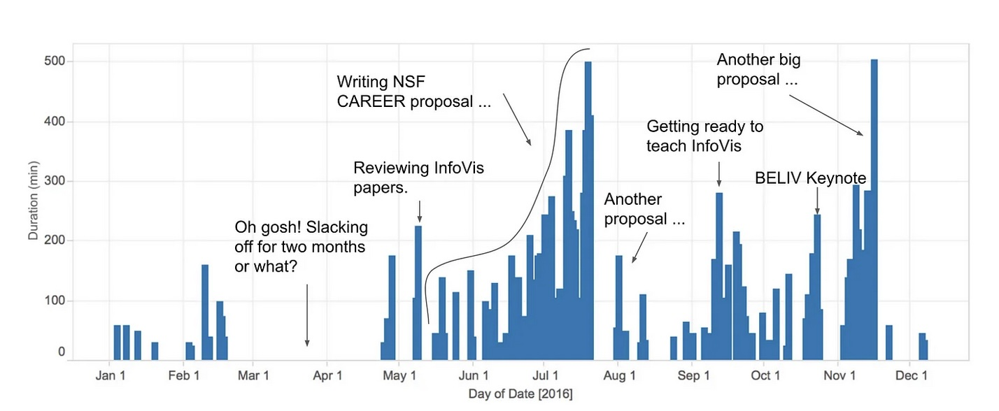
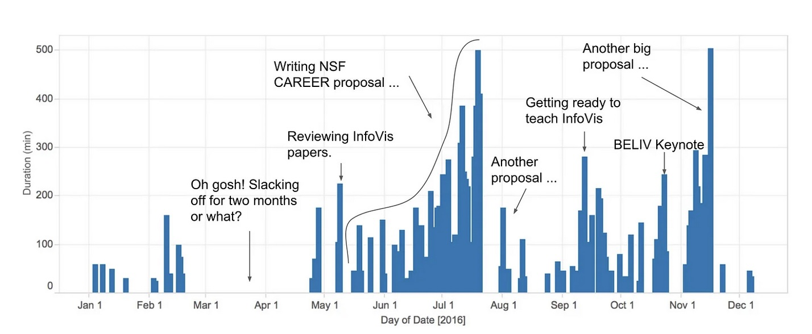

Information Visualization Fundamentals
CS-GY 9223 - Visualization for Machine Learning - Fall 2025
2025-09-08
What is Information Visualization? Why Use It?
“The use of computer-supported, interactive, visual representations of abstract data to amplify cognition.”

Abstract Data
Data with no obvious/natural visual representation
 

Abstract Data
Data with no obvious/natural visual representation

Cognitive artifacts: tools that help us think!
- Try to multiply 34 x 72 using exclusively your mind …
- … now do it again using pen and paper.

The Power of Visualization: Discovery
John Snow’s Cholera Map (1854)
- Mapped cholera deaths in London
- Revealed cluster around Broad Street water pump
- Visual evidence stopped the outbreak
Tip
Takeaway: Visualization is a powerful tool for discovery and finding patterns invisible in raw data.

The Power of Visualization: Storytelling
Charles Minard’s Map of Napoleon’s March (1869)
- Widely considered one of the best statistical graphics ever created
- Shows six variables simultaneously:
- Army size
- Location & direction
- Temperature
- Distance & time
Tip
Takeaway: Visualization is a powerful medium for dense, high-impact storytelling.

The Power of Visualization: Exploration
NYT: “How Y’all, Youse and You Guys Talk” (2013)
- Modern, interactive visualization
- Built with web technologies (like D3.js!)
- Allows personal exploration of dialect data
- Engages users through personalized results
Try it yourself: NYT Dialect Quiz
Tip
Takeaway: Visualization can be a dynamic interface for personal data exploration.

Why use a graphical representation?
- Large parts of our brain are devoted to spatial processing

Digression: Graphical Perception

Graphical Perception Experiment

Graphical Perception Results

Bar Chart
üìä Definition
Visualizes how a quantity distributes across categories
When to Use
- Compare values across groups
- Show rankings or order
- Display part-to-whole relationships
Key Features
- Length encodes value
- Categories on one axis
- Best for 5-20 categories

Scatter Plots + Faceting (without)

Tidy Data

Tidy Data

Tidy Data: Example #1

Tidy Data

Tidy Data: Example #2

Tidy Data

Graphical Marks

Effectiveness Effect